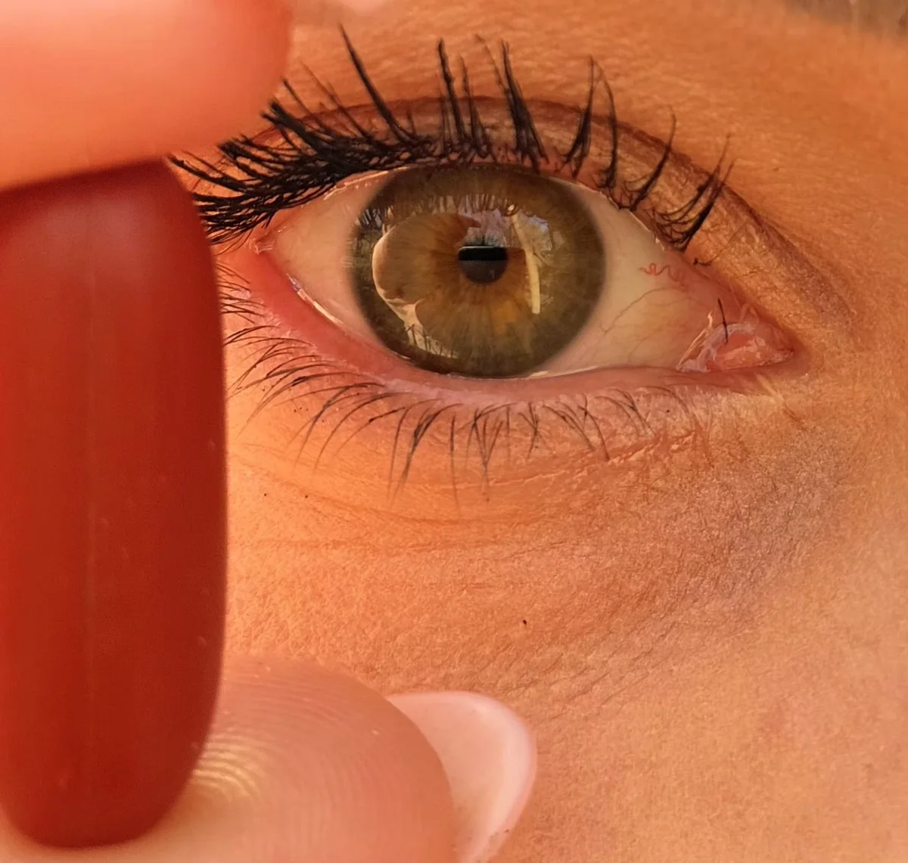
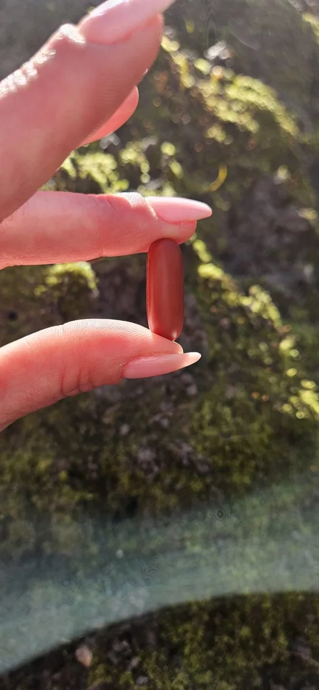
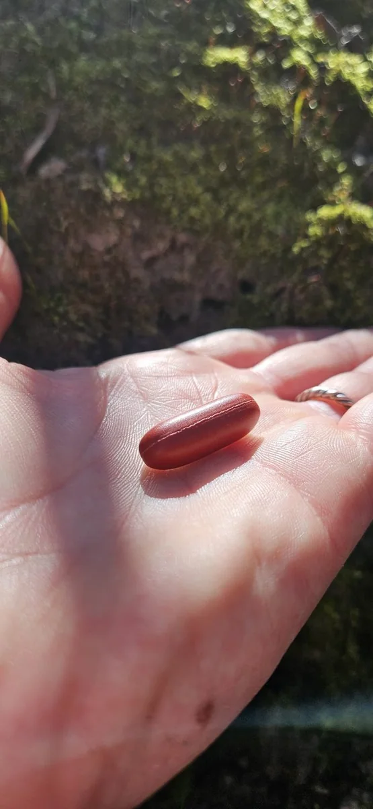
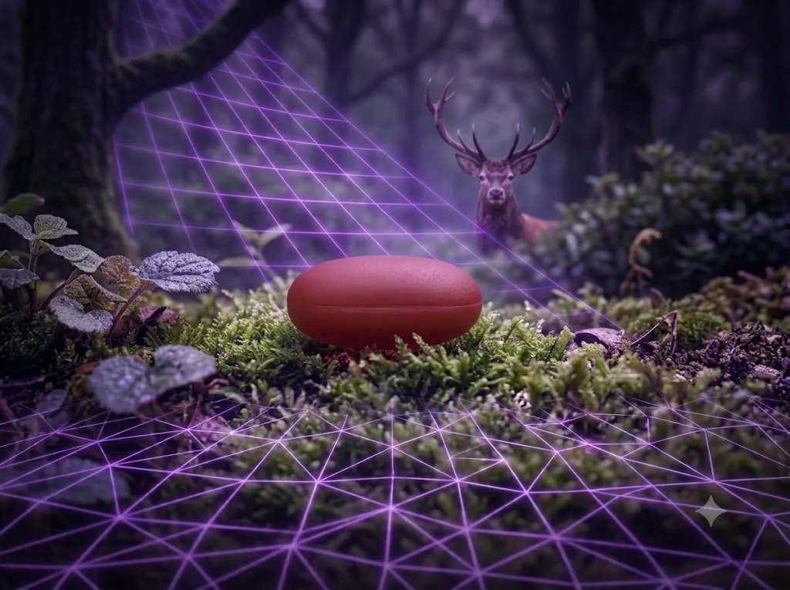
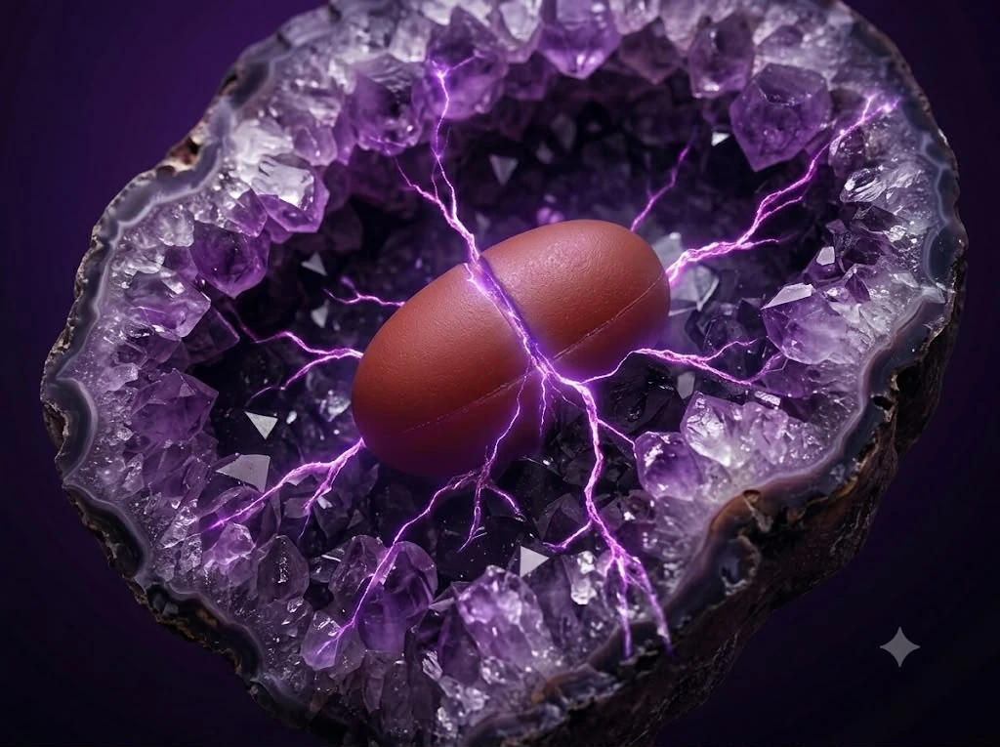
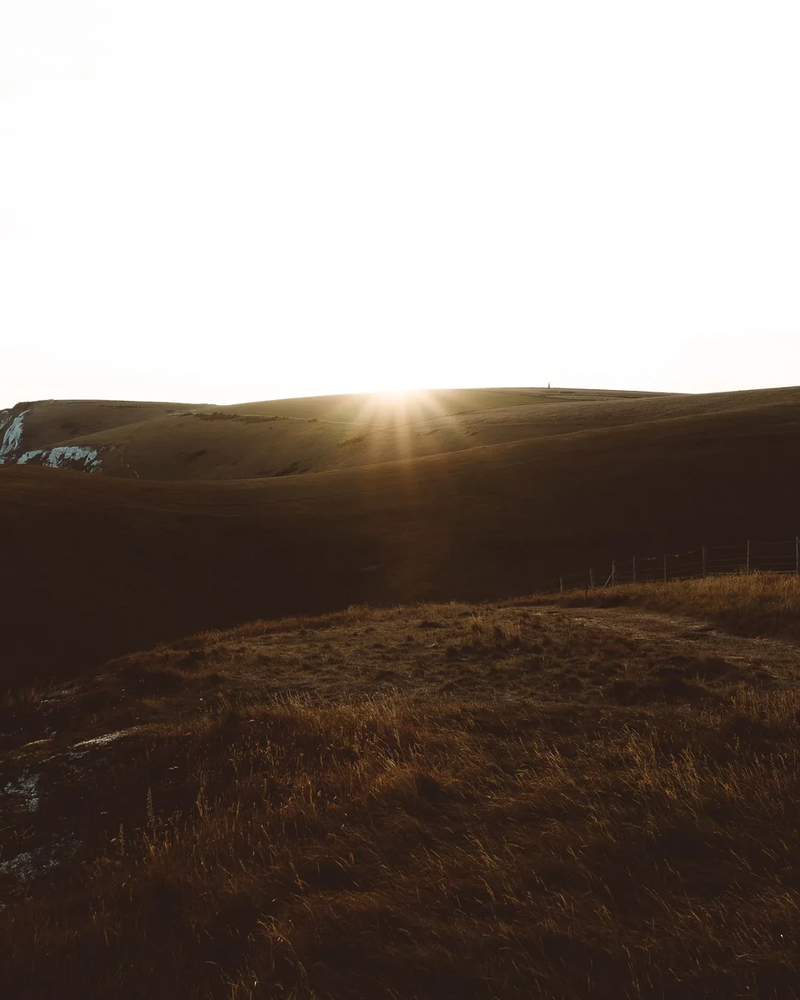
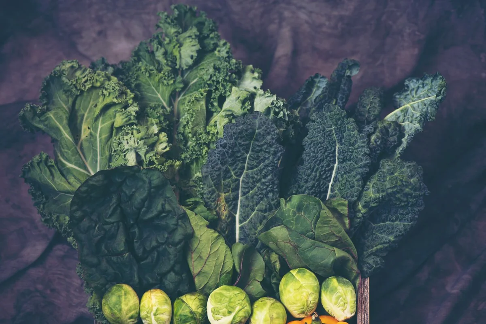
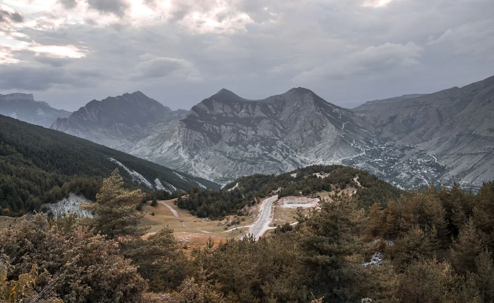

Wejdź na wyższy poziom energii. Protokół trzech Fundamentów Zdrowia, premium wsparcie regeneracji i Akademia Energii — dla tych, którzy inwestują w siebie.
Wejdź na wyższy poziom energii i świadomości.
Dbając o siebie — pomagasz innym.
Jedna kapsułka. Rytuał dla tych, którzy nie uznają kompromisów w kwestii jakości.
Zobacz serię ↓Prosta, sprawdzona filozofia: trzy filary, na których organizm buduje energię i regenerację — plus dwa darmowe wsparcia, które daje sama natura.
Dotlenienie organizmu. Świadomy oddech przeponowy i ruch na świeżym powietrzu to pierwsze, najważniejsze paliwo każdej komórki — baza energii i naturalnego detoksu.
Czysta, żywa woda o właściwej strukturze, bogata w minerały (m.in. z solą nierafinowaną), która realnie trafia do wnętrza komórek — nawodnienie na poziomie komórkowym.
Serce protokołu. Odżywianie na poziomie komórkowym — dostarczanie najgłębszego paliwa do witalności i regeneracji organizmu od środka.
Energia słoneczna wspiera syntezę witaminy D i regulację rytmu dobowego.
Bose stopy na ziemi — wiązane z redukcją stanów zapalnych i lepszym snem.

Poznaj siłę żywej, zielonej żywności pod okiem naszej ekspertki – Zielonej Mamy.
Zielony Protokół to fundament oczyszczania i odżywiania organizmu na poziomie komórkowym za pomocą tego, co w naturze najczystsze – organicznych soków z młodych traw i alg. To idealny, naturalny krok wprowadzający do głębokiej regeneracji.
Za tą ścieżką stoi Zielona Mama – certyfikowany fachowiec, doradca i serce naszego Zielonego Protokołu. Jako ekspert Fundacji Zdrowie z Pasją, pomoże Ci bezpiecznie wdrożyć zielone rytuały, dobrać odpowiednie dożywienie komórkowe i przygotować organizm na wyższy poziom witalności.
Co najważniejsze – wybierając Zielony Protokół, bezpośrednio wspierasz misję statutową naszej Fundacji, która przekazuje czystą, zieloną żywność tam, gdzie jest ona najbardziej potrzebna.
Nawodnienie to nie tylko ilość wody. To minerały, które kierują ją tam, gdzie jest potrzebna — do wnętrza komórek.
Elektrolity — sód, potas, magnez — decydują, czy woda trafia do komórek. Szklanka wody ze szczyptą soli niejodowanej to prosty rytuał wspierający prawidłowe nawodnienie.
Nierafinowana sól zachowuje magnez, potas i wapń, których pozbawiona jest zwykła sól. Magnez to kofaktor ponad 300 reakcji enzymatycznych — w tym produkcji energii (ATP).
Kilka głębokich oddechów przeponą — reset układu nerwowego.
Szklanka wody ze szczyptą soli niejodowanej rano.
Bose stopy na ziemi — badania pilotażowe wiążą to z niższym stanem zapalnym i lepszym snem.
Serce protokołu. Kod Purpury łączy zaawansowany ekstrakt komórkowy premium z bogactwem składników wspierających naturalną witalność, energię i dobre samopoczucie.

Zaawansowany, liofilizowany koncentrat komórkowy premium z Nowej Zelandii, łączony ze starannie dobranym zestawem składników. Celem formuły jest głębokie dożywienie organizmu wspierające jego naturalną witalność i regenerację „od środka".
Technologiczne trio: liofilizacja (zamknięcie pełni składników na sucho), powłoka dojelitowa (ochrona przed kwasem żołądkowym, wchłanianie prosto w jelitach) oraz atmosfera azotowa. Skwalen, kolagen, likopen i żeń-szeń tworzą tarczę antyoksydacyjną i komórkowe dożywienie.
Rdzeń formuły — liofilizowany koncentrat komórkowy (źródło: łożysko jelenia z Nowej Zelandii), bogaty w proteiny i składniki odżywcze.
Nano-peptydy wspierające skórę i tkanki.
Z wątroby rekina — wspiera dotlenienie komórek.
Silny antyoksydant, wspiera ochronę komórek.
Tradycyjnie kojarzony z witalnością i energią.
Wiesiołek, ogórecznik, awokado — bogactwo kwasów.
Trzy odsłony jednego rytuału. Natura, dynamika i źródło — ujęte w języku, w jakim mówi tylko premium.

Prawdziwy luksus nie krzyczy — redefiniuje to, co codzienne. Kod Purpury to nie kolejny suplement, to rytuał. Najrzadsze dary natury spotykają precyzję nauki w geometrii jednej, dopracowanej kapsułki. Elegancja spotyka jakość.
Precyzja, której nie widać gołym okiem. Kod Purpury łączy starannie dobrany, premium skład z estetyką, która dorównuje jakości. Dla świadomych, którzy patrzą dalej niż większość.

Każda kapsułka to arcydzieło precyzji. Tak jak natura potrzebuje eonów, by uformować najczystszy kryształ, my poświęciliśmy lata na formułę o nienagannej czystości. Osadzona w najrzadszych minerałach — symbol premium pochodzenia. Dla tych, którzy nie uznają kompromisów.
Suplement diety wspiera zdrowy styl życia — nie zastępuje zróżnicowanej diety ani leczenia. Zdjęcia mają charakter wizerunkowy.
Osadzony w najrzadszych minerałach — symbol premium pochodzenia i czystej jakości.
Zapytaj o Kod PurpuryDotlenienie — pierwsze paliwo każdej komórki.
Żywa woda z minerałami trafia tam, gdzie trzeba.
Kod Purpury dostarcza głębokie, komórkowe dożywienie.
Energia i witalność wracają — dzień po dniu.
Trzy proste momenty, które wpisują protokół w Twój dzień.
Szklanka wody ze szczyptą soli niejodowanej + kilka świadomych oddechów. Reset i nawodnienie na start.
Kapsułka Kod Purpury zgodnie z zaleceniem — najlepiej na czczo, popić wodą.
15 minut uziemnienia lub spaceru, mniej ekranów. Czas na regenerację.
Dawkowanie wyliczamy indywidualnie — Zielona Mama i etykieta produktu. Suplement wspiera zdrowy tryb życia — nie zastępuje diety ani leczenia.
Którzy chcą więcej energii i lepszego fokusu na co dzień.
Szukający wsparcia regeneracji, witalności i spokojnego snu.
Którzy stawiają na jakość, profilaktykę i czysty skład.
Prawdziwe doświadczenia osób, które weszły w rytuał Kodu Purpury.
„Po dwóch tygodniach rytuału mam więcej energii rano i spokojniej zasypiam. Prostota tego protokołu to jego siła."
„Zaczęłam od wyzwania 7 dni. Najbardziej dała mi woda z solą i uziemnianie — czuję realną różnicę w witalności."
„Kod Purpury wpisał mi się w codzienność. Lżejszy start dnia, lepszy fokus. Polecam każdemu, kto chce zadbać o siebie."
Miejsce na Wasze prawdziwe, zgodne z RODO opinie klientów — podeślij, wstawię 1:1. Indywidualne doświadczenia; nie stanowią porady medycznej.
Od darmowego wyzwania po pełny program i ścieżkę ambasadora. Wybierz swój poziom.
Ceny orientacyjne — dokładny zakres, terminy i formę (online / na żywo) ustala zespół. Napisz do nas, dobierzemy ścieżkę.
Kod Purpury to nie tylko produkt — to ludzie, którzy świadomie inwestują w siebie i swoją regenerację. Zacznij razem z nami, od bezpiecznego, darmowego kroku.
Dołącz do wyzwaniaOdpowiedz na 3 pytania — podpowiemy, od czego zacząć.
Dołącz do darmowego wyzwania — codziennie jeden prosty rytuał na wyższy poziom energii. Wszyscy zapisani biorą udział w losowaniu nagród.
Bez spamu. Zapisując się, akceptujesz otrzymanie 7 wiadomości wyzwania. Rezygnacja w każdej chwili.
Praktyczna wiedza o energii, regeneracji i świadomym stylu życia. Zapisz się, by dostać pierwsze materiały.
Artykuły o oddechu, żywej wodzie i regeneracji na poziomie komórkowym — konkretnie i bez ściemy. Pierwsze wpisy już są.
Czytaj artykuły →Wizualne przewodniki po filarach zdrowia i codziennej diecie — te same, które znasz z materiałów Fundacji.
Natlenienie · detoks · nawodnienie · regeneracja.
WkrótceCodzienne wybory, które wspierają energię.
WkrótceZa Kodem Purpury stoją ludzie, nie logo. Twoja zaufana Zielona Mama przeprowadzi Cię przez protokół, wyliczy suplementy, dobierze szkolenie i skompletuje zamówienie. Napisz — odpowiada osobiście.
Suplement oraz zaproszenia na warsztaty wyjazdowe zamówisz bezpośrednio u Zielonej Mamy — wyliczymy dawkowanie i skompletujemy pakiet.
Jeżeli kogoś naprawdę kochasz i szanujesz — dajesz tej osobie zdrowie.— Filozofia Kodu Purpury
Nie życzysz.
Dbając o siebie z Kodem Purpury, realnie wspierasz misję Fundacji Zdrowie z Pasją. Fundacja przeznacza środki na edukację zdrowotną oraz programy dożywiania organizmu czystą, żywą, zieloną żywnością — organicznymi sokami z traw i algami — tam, gdzie jest to najbardziej potrzebne (kluby seniora, projekty społeczne). Ty regenerujesz swoje komórki, a Fundacja niesie zielone, komórkowe dożywienie dalej w świat.
Pracujemy nad stworzeniem stałego, unikalnego miejsca, w którym połączymy naturę z nowoczesną technologią. Projekt w realizacji — bądź na bieżąco!
Strefa z komorą normosferyczną / normobaryczną.
Krystalicznie czysta woda oraz potężne, czyste zielonki dożywiające komórki.
Przestrzeń na wykłady, warsztaty i bezpośrednie spotkania.
Chcesz wiedzieć pierwszy, gdy ruszamy? Napisz do nas na WhatsApp.


